| 固定循环 |
循环 |
说明 |
CYCLE81 |
钻削，钻中心孔 |
CYCLE82 |
钻削，锪平面 |
CYCLE83 |
深孔钻削 |
CYCLE84/CYCLE840 |
刚性攻丝/攻丝，带弹性卡头 |
CYCLE85 |
铰孔 |
CYCLE86 |
镗孔 |
CYCLE801/HOLES1 |
方阵,框架/成排孔 |
CYCLE802/HOLES2 |
任意位置/圆周孔 |
CYCLE61 |
端面铣削 |
POCKET3 |
铣削矩形腔 |
POCKET4 |
铣削圆形腔 |
CYCLE76 |
铣削矩形凸台 |
CYCLE77 |
铣削圆形凸台 |
SLOT1 |
长槽 |
SLOT2 |
圆槽 |
LONGHOLE |
长孔 |
CYCLE70 |
螺纹铣削 |
| CYCLE81钻削，钻中心孔 |
1. 编程
CYCLE81 (REAL RTP,REAL RFP,REAL SDIS,REAL DP,REAL DPR,REAL_DTB,INT_GMODE,INT_DMODE,INT_AMODE)
2. 功能
使用循环“钻中心孔”，刀具以编程的主轴转速和进给速度加工
至编程的最终钻削深度或
至一定深度，在该深度下达到编程的钻中心孔直径
在编程的停留时间届满后刀具退回。
3.参数说明
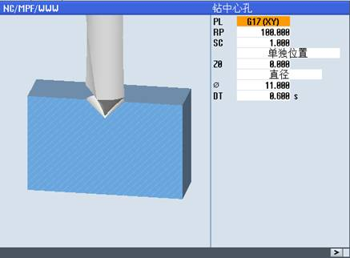
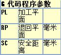
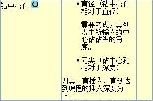
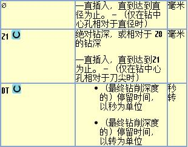
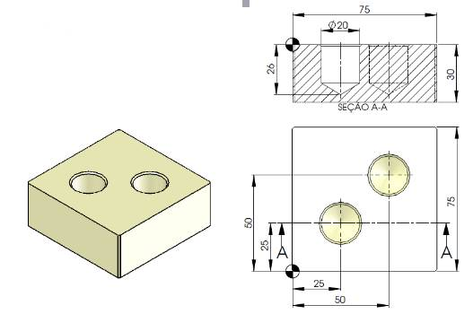
| CYCLE82 钻削，锪平面 |
1. 编程
CYCLE82 (REAL RTP,REAL RFP,REAL SDIS,REAL DP,REAL DPR,REAL_DTB,INT_GMODE,INT_DMODE,INT_AMODE)
2. 功能
使用循环“钻孔”，刀具以写入的主轴转速和进给速度钻削至输入的最终钻深（相当于刀杆或刀尖）。
在编程的停留时间届满后刀具退回。
3. 编程举例
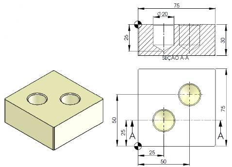
| CYCLE83深孔钻削 |
1. 编程
CYCLE83 (REAL RTP,REAL RFP,REAL SDIS,REAL DP,REAL DPR,REAL FDEP,REAL FDPR,REAL_DAM,REAL DTB,REAL DTS,REAL FRF,INT VARI,NT_AXN,REAL_MDEP,REAL_VRT,REAL_DTD,REAL_DISI,INT_GMODE,INT_DMODE,INT_AMODE)
2. 功能
使用循环“深孔钻削”，刀具以指定的主轴钻速和进给速度、分多次插入到工件中，直至达到深度21.可以给定：
进刀次数，进刀量保持恒定或按照指定的百分比不断递减。
不提刀进行断屑或提刀断屑。
第1次进刀时的进给率百分比，用于降低或提高进给率
停留时间
深度相对于刀杆或刀尖
3. 参数说明
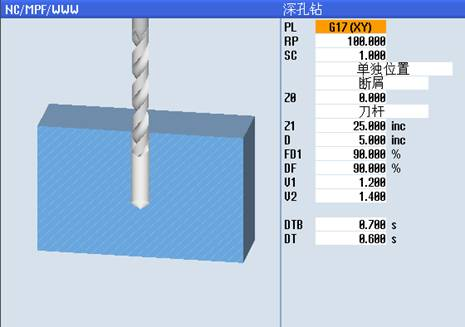
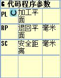
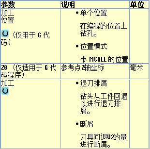
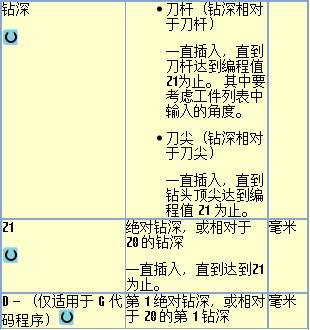
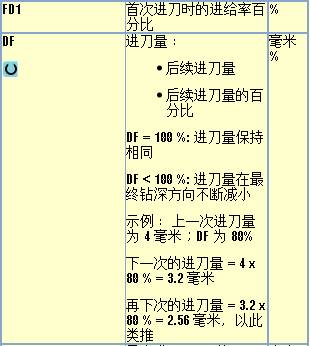
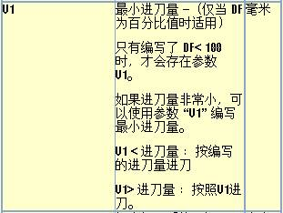
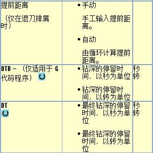
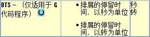
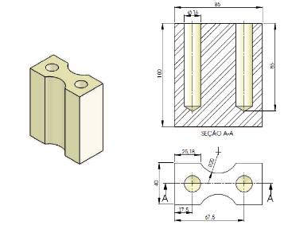
| CYCLE84/CYCLE840刚性攻丝/攻丝，带弹性卡头 |
1. 编程
CYCLE84 (REAL RTP,REAL RFP,REAL SDIS,REAL DP,REAL DPR,REAL DTB,INT SDAC,REAL MPIT,REAL PIT,REAL POSS,REAL SST,REAL SST1，INT_AXN,INT_PITA,INT_TECHNO,INT_VARI,REAL_DAM,REAL_VRT,STRING[15]_PITM,STRING[5]_PTAB,STRING[20]_PTABA,INT_GMODE,INT_DMODE,INT_AMODE)
CYCLE840 (REAL RTP,REAL RFP,REAL SDIS,REAL DP,REAL DPR,REAL DTB,INT SDR,INT SDAC,INT ENC,REAL MPIT,REAL PIT,INT_AXN,INT_PITA,INT_TECHNO,STRING[15]_PITM,STRING[5]_PTAB,STRING[20]_PTABA,INT_GMODE,INT_DMODE,INT_AMODE)
2. 功能
使用循环“攻丝”可以钻削内螺纹。
刀具以有效的转速和快进速率移动至安全距离。
然后同步主轴停止、主轴和进给率。接着刀具以编程的转速（取决于%S）插入工件。
可以选择进行-刀钻削、断屑或是从工件回退进行退刀排屑。
根据在栏“补偿夹具模式”中的选择生成以下循环调用。
带有补偿夹具：CYCLE840
不带补偿夹具：CYCLE84
在带补偿夹具的攻丝中-刀加工出螺纹。如果主轴配备了测量系统，CYCLE84可以实现多刀式的攻丝。
3. 参数说明
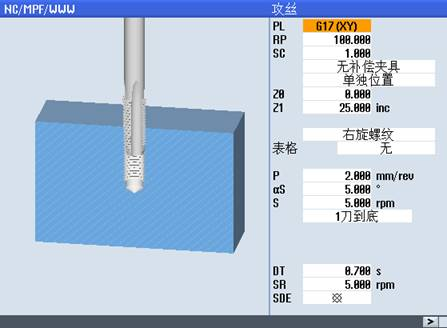
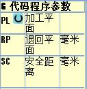
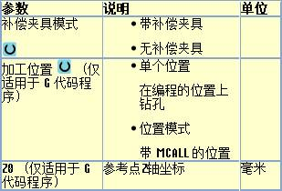
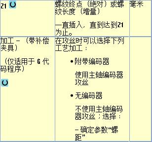
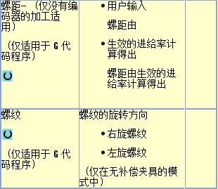
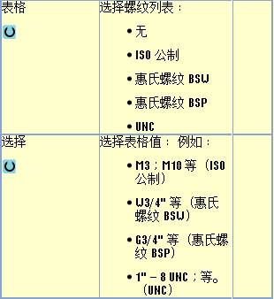
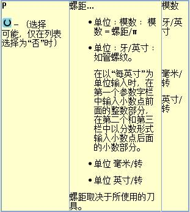
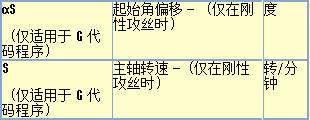
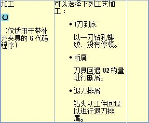
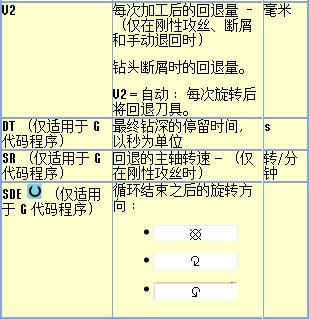
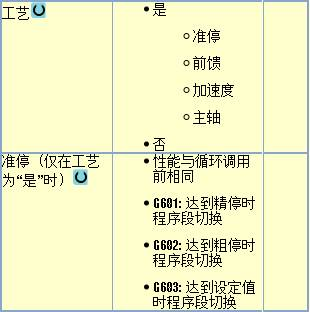
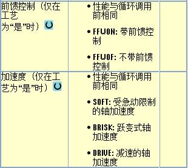
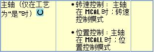
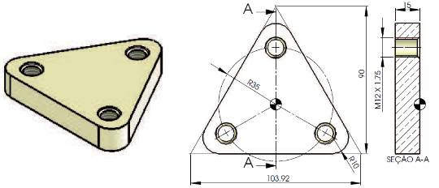
| CYCLE85铰孔 |
1. 编程
CYCLE85 (REAL RTP,REAL RFP,REAL SDIS,REAL DP,REAL DPR,REAL DTB, INT_GMODE,INT_DMODE,INT_AMODE)
2. 功能
使用循环“铰孔”，刀具以指定的主轴转速和F指定的进给率插入到工件中。
在铰孔时如达到21并且停留时间结束，会以指定的退回进给率回到退回平面。
3. 参数说明
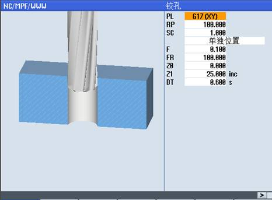
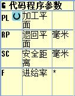
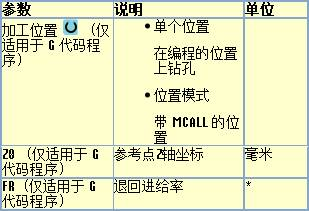
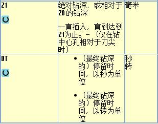
4. 编程举例
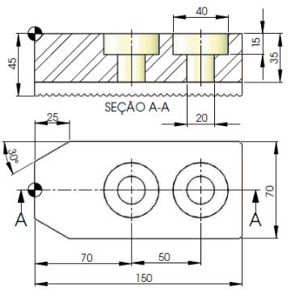
| CYCLE86镗孔 |
1. 编程
CYCLE86 (REAL RTP,REAL RFP,REAL SDIS,REAL DP,REAL DPR,REAL DTB,INT SDIR,REALRPA,REAL RPO,REAL RPAP,REAL POSS, INT_GMODE,INT_DMODE,INT_AMODE)
2. 功能
使用“镗孔”循环，刀具可以在考虑退回平面和安全距离的前提下以快进速率移动到编程位置。然后刀具以编程进给率F插入到编程深度（Z1）。
定向的主轴停止由SPOS指令执行，停留时间届满后，刀具退刀返回或不退刀返回。
3. 参数说明
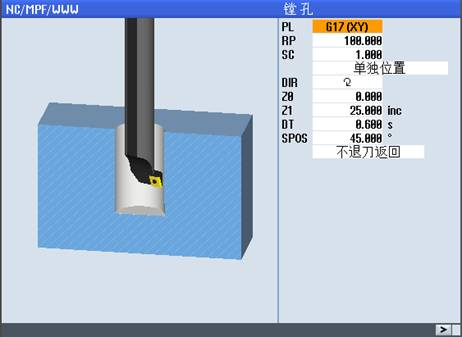
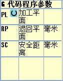
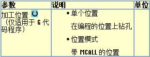
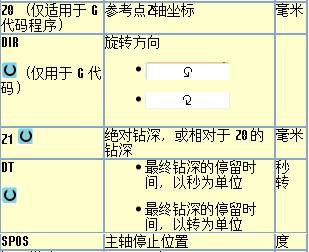
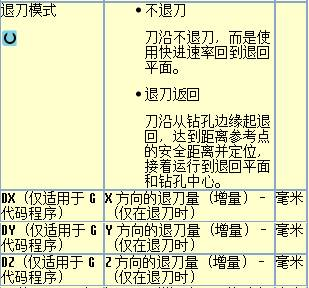
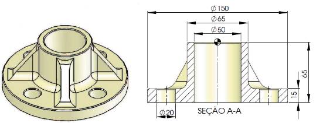
CYCLE801/ HOLES1方阵，框架/成排孔 |
|---|
1. 编程
CYCLE801 (REAL_SPCA,REAL_SPCO,REAL_STA,REAL_DIS1,REAL_DIS2，INT_NUM1，INT_NUM2，INT_VARI,INT_UMODE,
REAL_ANG1，REAL_ANG2，STRING[200]_HIDE,INT_NSP,INT_DMODE)
HOLES1(REAL SPCA,REAL SPCO,REAL STA1，REAL FDIS,REAL DBH,INT NUM,INT_VARI,INT_UMODE,STRING[200]_HIDE,INT_NSP,INT_DMODE)
2. 功能
通过“位置模式”循环您可以编写以下模式：
直线（HOLES1)
使用选项“直线”可以编写任意多个和直线保持等距的位置。
栅格（CYCLE801)
如果位置在一条或几条平行的直线上等距分布，使用选项“栅格”可以编程任意数量的位置。
如要编程菱形的栅格,则要输入角度αX或αY。
框架（CYCLE801)
如果位置在一个框架上等距分布，使用选项“框架”可以编程任意数量的位置。该间距在两个轴上可以不相等。
如果编程菱形的框架，则要输入角度αX或αY。
3. 参数说明
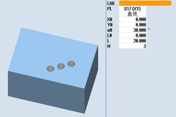
（HOLES1）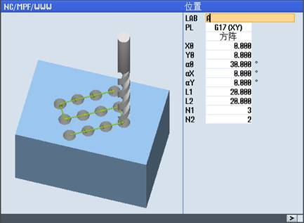
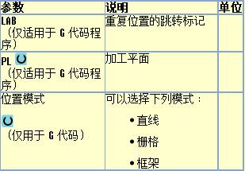
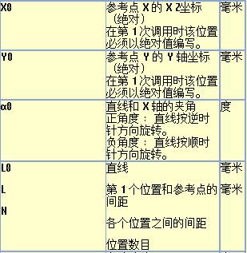
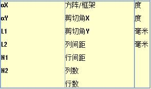
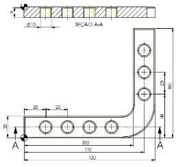
例题2
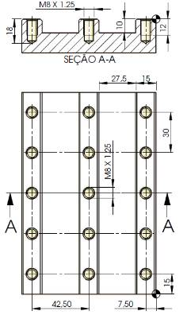
CYCLE802任意位置 |
|---|
1. 编程
CYCLE801 (REAL_SPCA,REAL_SPCO,REAL_STA,REAL_DIS1,REAL_DIS2，INT_NUM1，INT_NUM2，
INT_VARI,INT_UMODE,REAL_ANG1，REAL_ANG2，STRING[200]_HIDE,INT_NSP,INT_DMODE)
HOLES1(REAL SPCA,REAL SPCO,REAL STA1，REAL FDIS,REAL DBH,INT NUM,INT_VARI,INT_UMODE,STRING[200]_HIDE,INT_NSP,INT_DMODE)
2. 功能
通过“位置模式”循环您可以编写以下模式：
直线（HOLES1)
使用选项“直线”可以编写任意多个和直线保持等距的位置。
栅格（CYCLE801)
如果位置在一条或几条平行的直线上等距分布，使用选项“栅格”可以编程任意数量的位置。
如要编程菱形的栅格,则要输入角度αX或αY。
框架（CYCLE801)
如果位置在一个框架上等距分布，使用选项“框架”可以编程任意数量的位置。该间距在两个轴上可以不相等。
如果编程菱形的框架，则要输入角度αX或αY。
3. 参数说明
（HOLES1）
4. 编程举例
例题1
G17 G71 G90 G94
G53 G0 Z-110 D0
T04
M6
G54 D01 S800 M3
G0 X20 Y10
Z10
F200
MCALL CYCLE82(5,0,2,-26,,0.5,10,1,12)
HOLES1(20,10,0,0,20,4,,0,,,1)
HOLES1(110,40,90,0,20,3,,0,,,1)
MCALL
G53 G0 Z-110 D0 M5
M30
例题2
WORKPIECE(,,””,”BOX”,112,0,-25,-80,0,0,-100,150)
G17 G71 G90 G94
G53 G0 Z0 D0
T01
M6
G54 D01 S1800 M3
G0 X25 Y25
Z10
F100
MCALL CYCLE82(5,0,2,-26,,0.5,10,1,12)
CYCLE801(-92.5,15,0,42.5,30,3,5,0,0,0,0,,,1)
MCALL
G53 G0 Z0 D0
T02
M6
G54 D01 S1800 M3
G0 X25 Y25
Z10
F100
MCALL CYCLE84(5,0,2,-18,,0.7,3,,1.75,5,500,5,0,
1,0,1,5,1,,,,,1001,2001002)
CYCLE801(-92.5,15,0,42.5,30,3,5,0,0,0,0,,,1)
MCALL
G53 G0 Z0 D0
M30
HOLES2圆周孔 |
|---|
1. 编程
HOLES2(REAL CPA,REAL CPO,REAL RAD,REAL STA1，REAL INDA,INT NUM,INT_VARI,INT_UMODE,STRING[200]_HIDE,INT_NSP,INT_DMODE)
2. 功能
使用循环“位置圆”可以编程带定义半径的.整圆或节距圆上的钻孔。用于第一位置的基本旋转角度取决于X轴。控制器按
钻孔的数量继续行进一个计算出的角度。这个同样大小的角度适用于所有位置。
可以按直线或者圆弧轨迹将刀具运行到下一位置。
3. 参数说明
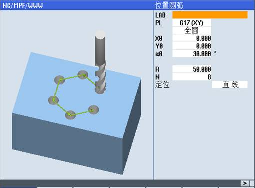
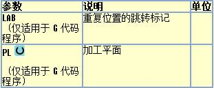
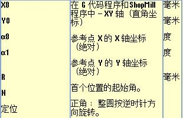
N10 WORKPIECE(,,””,”CYLINDER”,64,0,-9,-80,135)
G17 G71 G90 G94
G53 G0 Z-110 D0
T08; DRILL D8 MM
M6
G54 D01 G64 CFIN
S1550 M3
G0 X0 Y0
Z10
F230
MCALL CYCLE82(5,0,2,-26,,0.5,10,1,12)
HOLES2(0,0,50,108,30,5,1010,0,,,1)
MCALL
G53 G0 Z-110 D0 M5
M30
CYCLE61端面铣削 |
|---|
1. 编程
CYCLE61 (REAL_RTP,REAL_RFP,REAL_SDIS,REAL_DP,REAL_PA,REAL_PO,REAL_LENG,REAL_WID,REAL_MID,
REAL_MIDA,REAL_FALD,REAL_FFP1，INT_VARI,INT_LIM,INT_DMODE,INT_AMODE)
2. 功能
使用循环“平面铣削”可以铣削任意一个工件的断面，此时通常加工矩形平面。
可以铣出带或者不带边界的工件断面。
3. 参数说明
4. 编程举例
WORKPIECE(,,””,”BOX”,112,5,-20,-80,0,0,370,250)
G53 G0 Z0 D0
T01
M6
G54 D01 S1800 M3
G0 X25 Y25
Z10
F100
CYCLE61(8,5,2,0,0,0,370,250,2,80,0.1,200,31,0,1,
11010)
CYCLE61(8,5,2,0,0,0,370,250,2,80,0,200,32,0,1,11
010)
G53 G0 Z0 D0
M30
POCKET3铣削矩形腔 |
|---|
1. 编程
POCKET3(REAL_RTP,REAL_RFP,REAL_SDIS,REAL_DP,REAL_LENG,REAL_WID,REAL_CRAD,REAL_PA,REAL_PO,REAL_STA,REAL_MID,REAL_FAL,REAL_FALD,REAL_FFP1，REAL_FFD,INT_CDIR,INT_VARI,REAL_MIDA,REAL_AP1，REAL_AP2，REAL_AD,REAL_RAD1，REAL_DP1，INT_UMODE,REAL_FS,REAL_ZFS,INT_GMODE,INT_DMODE,INT_AMODE)
2. 功能
使用循环“铣削矩形腔“可以铣削任意的矩形腔。
提供有下列加工类型：
在立体材料上铣削矩形腔。
如果铣刀没有切过中心，则首先在中心预钻孔矩形腔（依次编写钻孔，矩形腔和位置程序段）。
加工预先加工过的矩形腔。
按工件图纸中矩形腔的尺寸，可以为矩形腔选择一个相应的参考点。
3. 参数说明
4. 编程举例
WORKPIECE(,,””,”BOX”,112,0,-20,-80,0,0,200,150)
G17 G71 G90 G94
G53 G0 Z0 D00
T01
M6
G54 D01 S1800 M3
G0 X0 Y0
Z10
F100
POCKET3(5,0,2,-10,150,100,15,100,75,0,2,0.1,0.1,200,0.1,0,21,50,8,3,15,10,1,0,1,2,1110
0,11,110)
POCKET3(5,0,2,-10,150,100,15,100,75,0,2,0.1,0.1,200,0.1,0,22,50,8,3,15,10,1,0,1,2,1110
0,11,110)
G53 G0 Z0 D0
M30
POCKET4铣削圆形腔 |
|---|
1. 编程
POCKET4(REAL_RTP,REAL_RFP,REAL_SDIS,REAL_DP,REAL_CDIAM,REAL_PA,REAL_PO,REAL_MID,REAL_FAL,
REAL_FALD,REAL_FFP1，REAL_FFD,INT_CDIR,INT_VARI.REAL_MIDA,REAL_AP1，REAL_AD,REAL_RAD1,REAL_DP1,
INT_UMODE,REAL_FS,REAL_ZFS,INT_GMODE,INT_DMODE,INT_AMODE)
2. 功能
使用循环”圆形腔“可以铣削任意的圆形腔。为此可以提供如下加工方法：
在立体材料上铣削圆形腔。
如果铣刀没有切过中心，则首先在中心预钻孔圆形腔（依次编写钻孔，圆形腔和位置程序段）。
加工预先加工过的圆形腔：完整加工 二次加工
在铣削时使用”圆形腔“功能可以提供下列加工类型：平面方式 螺旋线
3. 参数说明
4. 编程举例
WORKPIECE(,,””,”BOX”,112,0,-20,-80,0,0,70,60)
G53 G0 Z0 D0
T01
M6
G54 D01 S1800 M3
G0 X0 Y0
Z10
F100
POCKET3(5,0,2,-10,150,100,15,100,75,0,2,0.1,0.1,200,0.1,0,21,50,8,3,15,10,1,0,1,2,1110
0,11,110)
POCKET4(5,0,2,-15,50,35,30,2,0.1,0.1,200,0.1,0,1011,60,9,15,0,2,0,1,2,10100,111,110)
POCKET4(5,0,2,-15,50,35,30,2,0.1,0.1,200,0.1,0,1012,60,9,15,0,2,0,1,2,10100,111,110)
M30
CYCLE76铣削矩形凸台 |
|---|
1. 编程
CYCLE76(REAL_RTP,REAL_RFP,REAL_SDIS,REAL_DP,REAL_DPR,REAL_LENG,REAL_WID,REAL_CRAD,REAL_PA,
REAL_PO,REAL_STA,REAL_MID,REAL_FAL,REAL_FALD,REAL_FFP1,REAL_FFD,
INT_CDIR,INT_VARI,REAL_AP1,REAL_AP2,REAL_FS,REAL_ZFS,INT_GMODE,INT_DMODE,INT_AMODE)
2. 功能
使用循环“矩形凸台”可以铣出个各种矩形凸台。为此提供下列带有或者没有拐角半径的形状：
按工件图纸中矩形凸台的尺寸，可以为矩形凸台选择一个相应的参考点。
除所需的矩形凸台外还必须定义一个毛坯凸台。毛坯凸台是外部没有其他材料的区域，
即：可以采用快速移动到达该区域。毛坯凸台不能与相邻的毛坯凸台相交，而且循环
会自动沿成品凸台中心放置一个毛坯凸台。
矩形凸台只需一次进刀便可加工完毕。如果想多次进刀，必须采用不断变小的精加工余量
来多次编写循环“矩形凸台”。
3. 参数说明
CYCLE77铣削圆形凸台 |
|---|
1. 编程
CYCLE77(REAL_RTP,REAL_RFP,REAL_SDIS,REAL_DP,REAL_DPR,REAL_CDIAM,REAL_PA,REAL_PO,REAL_MID,
REAL_FAID,REAL_FFP1,REAL_FFD,INT_CDIR,INT_VARI,REAL_AP1,REAL_FS,REAL_ZFS,INT_GMODE,INT_DMODE,INT_AMODE)
2. 功能
使用循环”圆形凸台”可以铣出各种圆形凸台。
除所需的圆形凸台外还必须定义一个毛坯凸台。毛坯凸台确定了没有材料的区域，即：在该区域外可以快速进给。毛坯凸台不能与相邻的毛坯
凸台相交，会自动绕成品凸台把毛坯凸台放置在中心上.
仅用一次进给加工出圆形凸台。如果想分多次进给来加工，必须用功能圆形凸台。多次编程一直减小的精加工余量。
3. 参数说明
4. 编程举例
WORKPIECE(,,””,”BOX”,112,0,-20,-80,0,0,55,55)
G53 G0 Z0 D0
T01
M6
G54 D01 S1800 M3
G0 X25 Y25
Z10
F100
CYCLE76(5,0,2,-10,,70,45,10,40,27.5,10,2,0.1,0.1,200,150,0,1,80,55,1,2,1100,1,102)
CYCLE77(5,0,2,-15,,50,27.5,27.5,2,0.1,0.1,200,150,0,1,55,1,2,100,1,102)
CYCLE77(5,0,2,-15,,50,27.5,27.5,2,0.1,0.1,200,150,0,2,55,1,2,100,1,102)
M30
SLOT1长槽 |
|---|
1. 编程
SLOT1(REAL RTP,REAL RFP,REAL SDIS,REAL_DP,REAL_DPR,INT NUM,REAL LENG,REAL WID,REAL_CPA,REAL_CPO,REAL RAD,REAL STA1,
REAL INDA,REAL FFD,REAL FFP1,REAL_MID,INT CDIR,REAL_FAL,INT VARI,REAL_MIDF,REAL FFP2,REAL SSF,REAL_FALD,REAL_STA2,REAL_DP1,INT_UMODE,REAL_FS,REAL_ZFS,INT_GMODE,INT_DMODE,INT_AMODE)
2. 功能
使用循环"纵向槽“可以铣出任意一个纵向槽。
在”纵向槽“循环中提供以下加工方法：
在整块材料上铣出纵向槽。
如果铣刀不在中心上方切削，则首先在工件中心预钻纵向槽。
3. 参数说明
4. 编程举例
:
N10 WORKPIECE(,,””,”CYLINDER”,64,0,-25,-80,140)
N20 G17 G71 G90 G94
N30 ;G53 G0 Z0 D00
N40 T01
N50 M6
N60 G54 D01 S1800 M3
N70 G0 X0 Y0
N80 Z10
N90 F100
MCALL SLOT1(5,0,2,-3,,1,15,6,0,0,5,0,0,0.1,200,1,0,0,21,0.1,15,15,0,2,2,0,1,2,1100,1011,102)
HOLES2(0,0,30,45,30,4,1010,0,,,1)
MCALL
G53 G0 Z-110 D0
M30
SLOT2圆槽 |
|---|
1. 编程
SLOT2(REAL RTP,REAL RFP,REAL SDIS,REAL_DP,REAL_DPR,INT NUM,REAL AFSL,REAL WID,REAL_CPA,REAL_CPO,REAL RAD,REAL
STA1,REAL INDA,REAL FFD,REAL FFP1,REAL_MID,INT CDIR,REAL_FAL,INT VARI,REAL_MIDF,REAL FFP2,REAL SSF,REAL_FFCP,
INT_UMODE,REAL_FS,REAL_ZFS,INT_GMODE,INT_DMODE,INT_AMODE)
2. 功能
使用循环圆弧槽可以在整圆或节距圆上铣削出一个或多个同样大小的圆弧槽。
刀具大小
请注意，加工圆弧槽时铣刀不能超过最小大小
粗加工
精加工
边沿精加工
环形槽
如果想生成一个环形槽，必须为参数数字N和张角α1输入下面的值：
N=1
α1=360°
3. 参数说明
4. 编程举例
:
N10 WORKPIECE(,,””,”CYLINDER”,64,0,-4.9,-80,140)
N20 G17 G71 G90 G94
N30 G53 G0 Z0 D00
N40 T01
N50 M6
N60 G54 D01 S1800 M3
N70 G0 X0 Y0
N80 Z10
N90 F100
N100 SLOT2(5,0,2,-5,,3,80,20,0,0,47.5,-20,90,200,200,2,0,0,1011,0,0,0,,0,1,2,100,1001,102)
N110 G53 G0 Z-110 D0
N120 M30
LONNGHOLE长孔 |
|---|
1. 编程
LONGHOLE(REAL RTP,REAL RFP,REAL SDIS,REAL_DP,REAL_DPR,INT NUM,REAL LENG,REAL_CPA,REAL_CPO,REAL RAD,REAL STA1，REAL INDA,REAL FFD,REAL FFP1，REAL MID,INT_VARI,INT_UMODE,INT_GMODE,INT_DMODE,INT_AMODE)
2. 功能
与槽相反，长孔的宽度由刀具直径确定。
循环内部会确定最佳的刀具运行行程，避免不必要的空行程。如果加工长孔需要多次深度进刀，会在终点时交替进刀。
在每次进刀后，平面内沿着长孔纵向轴的退回轨迹都会换向。在过渡到下一个长孔时，循环会自动找出最短的路径。
3. 参数说明
4. 编程举例
:
G53 G0 Z-110 D0
T01
M6
G54 D01 S2400 M3 G64 CFIN
G0 X0 Y0
Z10
LONGHOLE(5,0,2,-10,,2,53.5,0,0,8.5,30,120,150,500,2.5,1,0,2100,1001,2)
LONGHOLE(5,0,2,-10, ,2,53.5,0,0, 8.5,210,120,150,500,2.5)
G53 G0 Z-110 D0 M5
M30
CYCLE70螺纹铣削 |
|---|
1. 编程
CYCLE70(REAL RTP,REAL RFP,REAL SDIS,REAL_DP,REAL_DIATH,REAL_HI,REAL_FAL,REAL_PIT,INT_NT,REAL_FFR,INT_TYPTH,REAL_PA,REAL_PO.
REAL_NSP,INT_VARI,INT_PITA,STRING[15]_PITM,STRING[20]_PTAB,STRING[20]_PTABA,INT_GMODE,INT_DMODE,INT_AMODE)
2. 功能
使用螺纹铣刀可以加工相同螺距的内螺纹与外螺纹。螺纹可以被加工成右旋螺纹或者左旋螺纹，可以从上至下
或者相反地从下至上进行加工。
加工公制螺纹（螺距P为毫米/转）时，该循环会将由螺距所计算出的值自动赋给参数螺纹深度H1。可以修改该值。必须通过机床数据激活默认设置。
3. 参数说明
4. 编程举例
WORKPIECE(,,””,”CYLINDER”,64,0,-30,-80,100)
G17 G71 G90 G94
G53 G0 Z-110 D0
T01;
M6
G54 D01 S1800 M3
G0 X0 Y0
Z2
CYCLE70(5,0,2,-30,60,2.8,0,4,7,1,200,0,0,0,45,11,1,,,,,1,0)
G53 G0 Z-110 D0 M5
M30